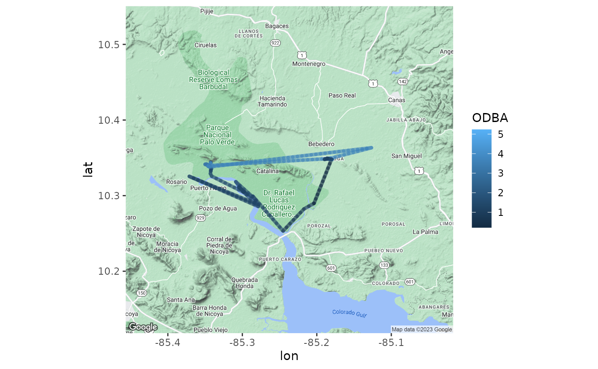

CrocodileBehaviorTutorial.rmdThe purpose of this R package is for analysis and visualization of remotely transmitted movement and behavioral data from animal-borne devices. This package will work with data obtained from custom-built satellite trackers developed by Dr. Youngho Shin. These data will include measurements obtained from sensors such as: IMU, GPS, real-time clock, depth recorder, and more.
## ── Attaching core tidyverse packages ──────────────────────── tidyverse 2.0.0 ──
## ✔ dplyr 1.1.4 ✔ readr 2.1.4
## ✔ forcats 1.0.0 ✔ stringr 1.5.1
## ✔ ggplot2 3.4.4 ✔ tibble 3.2.1
## ✔ lubridate 1.9.3 ✔ tidyr 1.3.0
## ✔ purrr 1.0.2
## ── Conflicts ────────────────────────────────────────── tidyverse_conflicts() ──
## ✖ dplyr::filter() masks stats::filter()
## ✖ dplyr::lag() masks stats::lag()
## ℹ Use the conflicted package (<http://conflicted.r-lib.org/>) to force all conflicts to become errors## Loading required package: usethis## Found git version 2.25.1
## Supported HTTPS credential helpers: cache, store
## Found OpenSSH_8.2p1 Ubuntu-4ubuntu0.9, OpenSSL 1.1.1f 31 Mar 2020
## No key found. Use ssh_keygen() to generate one!##
## Attaching package: 'cowplot'
##
## The following object is masked from 'package:lubridate':
##
## stamp
install.packages("ggmap")## Installing package into '/tmp/RtmpFscjDg/temp_libpath13152e1c79d'
## (as 'lib' is unspecified)
install.packages("remotes")## Installing package into '/tmp/RtmpFscjDg/temp_libpath13152e1c79d'
## (as 'lib' is unspecified)
install.packages("googlesheets4")## Installing package into '/tmp/RtmpFscjDg/temp_libpath13152e1c79d'
## (as 'lib' is unspecified)## ℹ Google's Terms of Service: <https://mapsplatform.google.com>
## Stadia Maps' Terms of Service: <https://stadiamaps.com/terms-of-service/>
## OpenStreetMap's Tile Usage Policy: <https://operations.osmfoundation.org/policies/tiles/>
## ℹ Please cite ggmap if you use it! Use `citation("ggmap")` for details.
##
## Attaching package: 'ggmap'
##
##
## The following object is masked from 'package:cowplot':
##
## theme_nothing##
## Attaching package: 'remotes'
##
## The following objects are masked from 'package:devtools':
##
## dev_package_deps, install_bioc, install_bitbucket, install_cran,
## install_deps, install_dev, install_git, install_github,
## install_gitlab, install_local, install_svn, install_url,
## install_version, update_packages
##
## The following object is masked from 'package:usethis':
##
## git_credentialsTo install the R package enter the following code into your console. This package will include functions from vegan and tidyverse as well as functions unique to this package.
remotes::install_github("mcgrealmaggie/crocodiles.pkg")## Using github PAT from envvar GITHUB_PAT## Downloading GitHub repo mcgrealmaggie/crocodiles.pkg@HEAD##
## ── R CMD build ─────────────────────────────────────────────────────────────────
## * checking for file ‘/tmp/RtmpdG7ykc/remotes14685f6c8bc/mcgrealmaggie-crocodiles.pkg-52ecadc/DESCRIPTION’ ... OK
## * preparing ‘mcgreal.pkg’:
## * checking DESCRIPTION meta-information ... OK
## * checking for LF line-endings in source and make files and shell scripts
## * checking for empty or unneeded directories
## * looking to see if a ‘data/datalist’ file should be added
## * building ‘mcgreal.pkg_0.1.tar.gz’
## Warning: invalid uid value replaced by that for user 'nobody'## Installing package into '/tmp/RtmpFscjDg/temp_libpath13152e1c79d'
## (as 'lib' is unspecified)
#install.packages("mcgreal.pkg")
library(mcgreal.pkg)Run the following code to obtain and store the data for this tutorial.
gs4_deauth()
croc <- read_sheet("https://docs.google.com/spreadsheets/d/17-DF8Riz_mkOL-KpFpe1K9W6FBnJdiWsziWZk_IOpiA/edit?usp=sharing")## ✔ Reading from croc.## ✔ Range croc.csv.Run the following code to preview the data.
head(croc)## # A tibble: 6 × 10
## id date time lat long X Y Z behavior
## <dbl> <chr> <dttm> <dbl> <dbl> <dbl> <dbl> <dbl> <chr>
## 1 716739 2021.05.14 1899-12-30 19:36:31 10.3 -85.3 0.148 0.113 0.59 inactive …
## 2 716739 2021.05.15 1899-12-30 19:36:32 10.3 -85.3 0.148 0.113 0.59 swimming
## 3 716739 2021.05.16 1899-12-30 19:36:33 10.3 -85.3 0.148 0.113 0.59 inactive …
## 4 716739 2021.05.17 1899-12-30 19:36:34 10.3 -85.3 0.973 1.03 -1.98 gaping
## 5 716739 2021.05.18 1899-12-30 19:36:35 10.3 -85.3 0.973 1.03 -1.98 gaping
## 6 716739 2021.05.19 1899-12-30 19:36:36 10.3 -85.3 0.797 1.34 -2.46 swimming
## # ℹ 1 more variable: context <chr>These animal borne trackers collect continuous high frequency data, so the datasets obtained from them will be very large. For this reason, multiple kinds of analysis will be ran separately and it’s useful to start by creating a new data.frame with only the columns needed for that particular analysis.
This package will focus on matching behaviors, or behavioral states, to activity levels and how the animal distributes its activities across the landscape. Therefore, the function sensorData() will take our imported data set, select only the columns for longitude, latitude, acceleration measurements (X, Y, and Z), and assigned behaviors. Because we are getting rid of the timestamps, this function will also create a new column called “sample_ID” which numbers the rows in chronological order, to assure the GPS points follow the correct path.
To obtain the cleaned data.frame, enter the following code into your R console.
data <- sensorData(croc, "long", "lat", "X", "Y", "Z", "behavior", "sample_id")Run the following code to ensure the new data.frame contains the appropriate columns.
head(data)## # A tibble: 6 × 7
## sample_id long lat X Y Z behavior
## <int> <dbl> <dbl> <dbl> <dbl> <dbl> <chr>
## 1 1 -85.3 10.3 0.148 0.113 0.59 inactive resting
## 2 2 -85.3 10.3 0.148 0.113 0.59 swimming
## 3 3 -85.3 10.3 0.148 0.113 0.59 inactive resting
## 4 4 -85.3 10.3 0.973 1.03 -1.98 gaping
## 5 5 -85.3 10.3 0.973 1.03 -1.98 gaping
## 6 6 -85.3 10.3 0.797 1.34 -2.46 swimmingOne of the most exciting aspects of tri-axial accelerometers are their value in quantifying proxies for energy expenditure. By taking the sum of the absolute values of the three axes of acceleration measurements, we get a metric known as ODBA, or Overall Dynamic Body Acceleration. This serves as a quantification of activity levels. Together with assigned behavioral states and GPS data, ODBA allows us to peer into the secret lives of animals; how, where, and what they spend their time and energy on.
ODBA can be calculated and added as an additional column in the data.frame with the function calculateODBA(). This function contains arguments in which the data.frame and the 3 columns containing acceleration measurements (X, Y, Z) are identified and used to produce a new data.frame with the calculated ODBA column.
data <- calculateODBA(data, X, Y, Z)Are there notable differences in the average ODBA values across the various crocodile behaviors? Do different behaviors lead to statistically significant variations in activity levels?
Answering these questions is important for a) identifying characteristics of acceleration associated with certain behaviors, allowing us to better understand what an animal is doing from the measurements taken by the sensors, and b) determine if certain behaviors are more energetically costly than others.
To better understand the relationship between ODBA variation and certain crocodile behaviors, the function runANOVA will take your data.frame, ODBA as the response variable, and behavior as the predictor, and provide a summary of the ANOVA which aims to answer the question: Does the variation in ODBA differ across behaviors in crocodiles?
runANOVA(data, "ODBA", "behavior")## Df Sum Sq Mean Sq F value Pr(>F)
## behavior 4 8.43 2.107 1.595 0.179
## Residuals 129 170.35 1.321## Df Sum Sq Mean Sq F value Pr(>F)
## behavior 4 8.43 2.107 1.595 0.179
## Residuals 129 170.35 1.321To fully understand the relationship between activity level and certain behaviors, it is useful to visualize it as a plot. The function plotODBA will use the same arguments as the ANOVA and provide you with a plot that plots ODBA levels according to behavior as well as the means and variance of ODBA for each of those behaviors.
plotODBA(data, "behavior", "ODBA")The function mapODBA() creates a map from GPS data and colors the path according to corresponding ODBA values, allowing us to gain insight into where and how crocodiles distribute their energy across the landscape.
mapODBA(data, "long", "lat", "ODBA")## ! Bounding box given to Google - spatial extent only approximate.## ℹ <https://maps.googleapis.com/maps/api/staticmap?center=10.334686,-85.237056&zoom=11&size=640x640&scale=2&maptype=terrain&language=en-EN&key=xxx-xDPMFeWS7F7CgQhALUGRA9sbTSZM>Being able to attribute animal activity and specific behaviors to geographic locations is not only interesting, it is also extremely useful for things like conservation efforts and, in the case of these crocodiles, mitigating human wildlife conflicts. Through doing this, we can see movement routes, important habitats for feeding and mating, and much more.
The function mapBehavior() will take the behavior associated with each GPS coordinate and display them as points on the map. To create this map, run the following code.
mapBehavior(data, "long", "lat", "behavior")## ! Bounding box given to Google - spatial extent only approximate.## ℹ <https://maps.googleapis.com/maps/api/staticmap?center=10.334686,-85.237056&zoom=11&size=640x640&scale=2&maptype=terrain&language=en-EN&key=xxx-xDPMFeWS7F7CgQhALUGRA9sbTSZM>